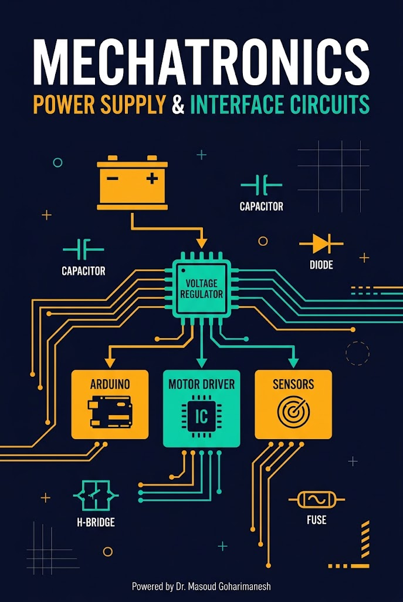
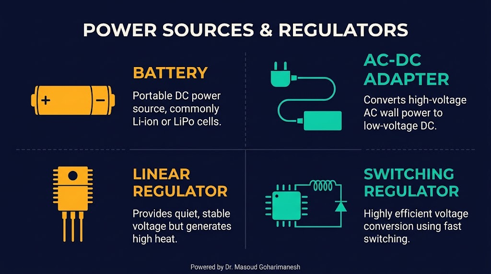
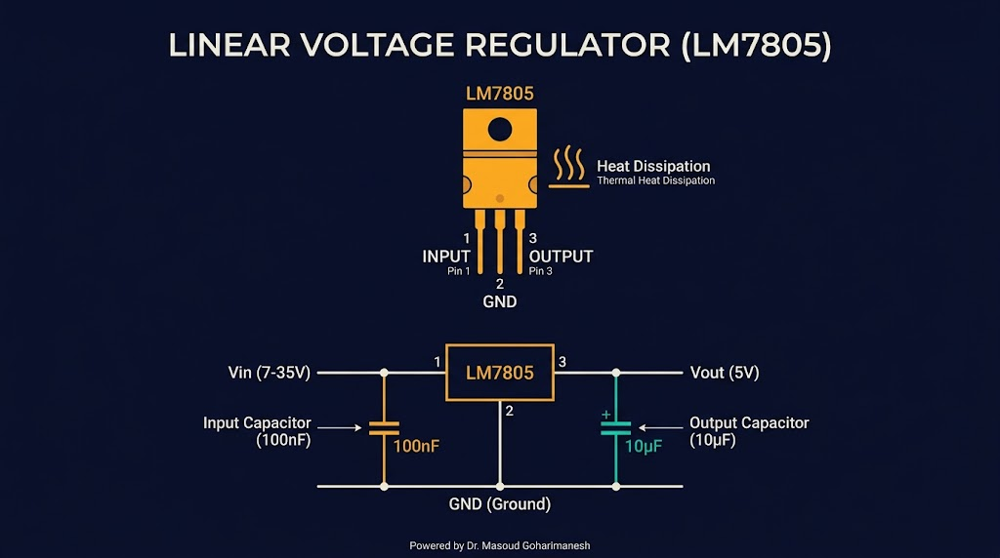
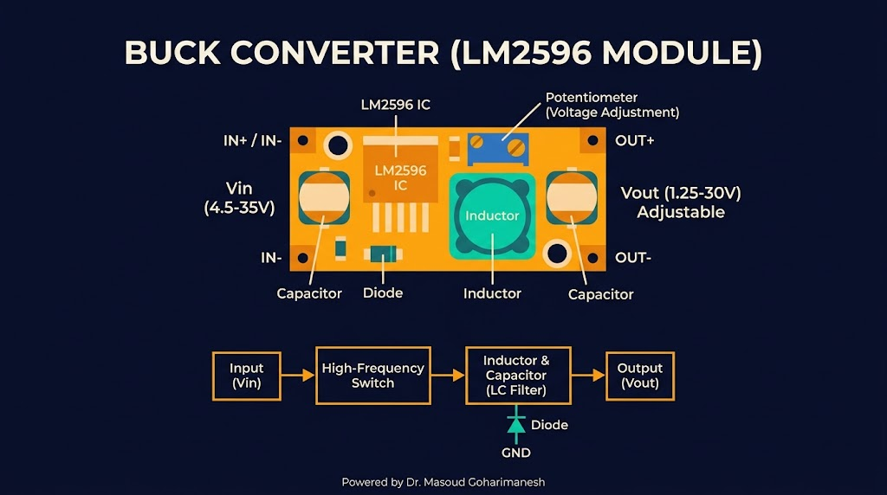
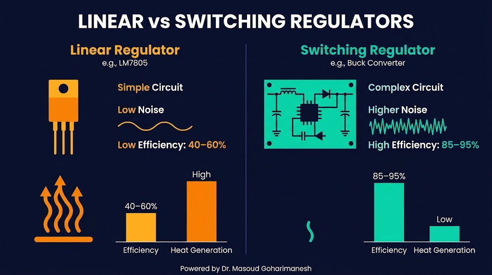
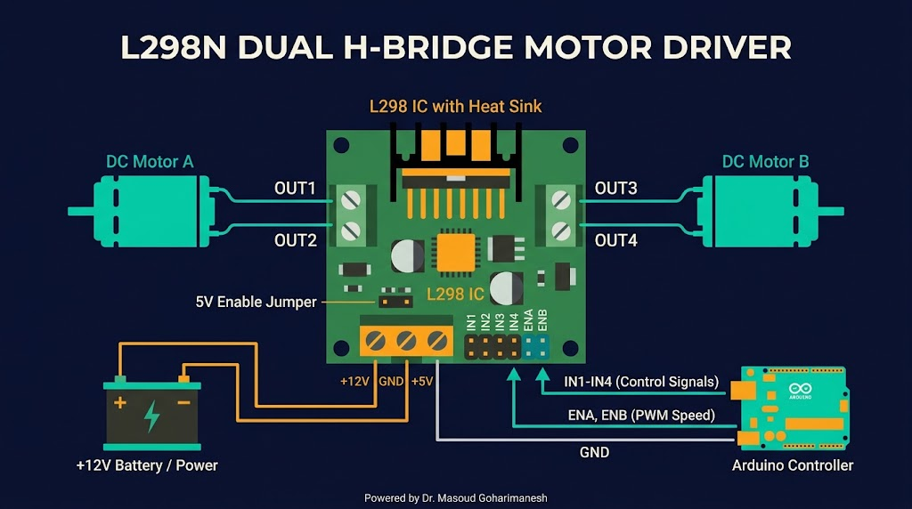
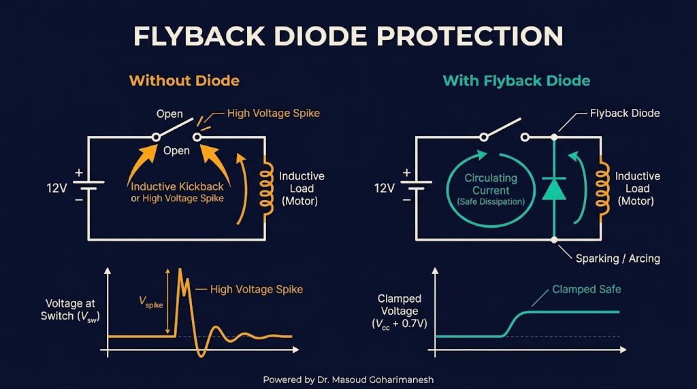
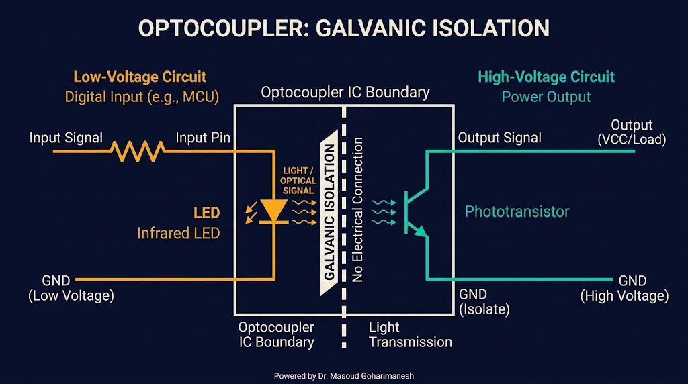

رگولاتور، درایو موتور، محافظت مدار
دکتر مسعود گوهریمنش
دانشیار گروه مهندسی مکانیک
دانشگاه تربت حیدریه | پاییز ۱۴۰۵
بیش از ۷۰٪ خرابیهای الکترونیکی به دلیل تغذیه نامناسب است!
برای یک ربات متحرک با موتور ۱۲ ولت، آردینو ۵ ولت و سنسور ۳.۳ ولت، چگونه سیستم تغذیه طراحی میکنید؟
پایه و اساس عملکرد صحیح
تأمین ولتاژ و جریان مورد نیاز برای همه اجزا
جلوگیری از آسیب به مدار در برابر اضافهولتاژ و اضافهجریان
کاهش نویز و ریپل برای عملکرد دقیق سنسورها
از باتری تا آداپتور

قابل حمل، بدون نویز، محدودیت انرژی
برق شهری به DC، برای استفاده ثابت
ساده، کمنویز، راندمان پایین
راندمان بالا، نویز بیشتر
LM7805 و AMS1117

فرمول تلفات توان:
مثال: V_in=12V, V_out=5V, I=0.5A → P_loss = ۳.۵ وات (نیاز به هیتسینک)
LM2596 و ماژولهای Buck/Boost

کدام را انتخاب کنیم؟

| ویژگی | خطی (LM7805) | سوئیچینگ (LM2596) |
|---|---|---|
| راندمان | ۴۰-۶۰٪ | ۸۵-۹۵٪ |
| نویز خروجی | بسیار کم | متوسط (نیاز به فیلتر) |
| تولید حرارت | زیاد | کم |
| پیچیدگی مدار | ساده | متوسط |
| کاربرد | سنسورهای دقیق، ADC | موتور، LED، بارهای سنگین |
قاعده طلایی: برای سنسورهای آنالوگ و ADC از رگولاتور خطی، برای موتور و بارهای سنگین از سوئیچینگ استفاده کنید.
انتخاب و محاسبه
۳.۷V (سل)، چگالی بالا، سبک
۳.۲V، ایمنتر، عمر بیشتر
۱.۲V، ارزان، سنگینتر
مثال: ربات با مصرف متوسط ۲ آمپر که باید ۲ ساعت کار کند: C = 2 × 2 = ۴ آمپر-ساعت (یا ۴۰۰۰ میلیآمپر-ساعت)
برای باتریهای لیتیومی ضروری است. وظایف: حفاظت از اضافهولتاژ، اضافهجریان، اتصال کوتاه، و متعادلسازی سلولها.
کنترل جهت و سرعت موتور DC
چهار سوئیچ (ترانزیستور یا MOSFET) به شکل حرف H قرار میگیرند. موتور در وسط H قرار دارد. با روشن و خاموش کردن سوئیچها، جهت جریان و در نتیجه جهت چرخش موتور کنترل میشود.
با PWM روی پایه ENABLE (یا پایههای سوئیچینگ) سرعت کنترل میشود.
پرکاربردترین درایور در پروژههای رباتیک

// حرکت به جلو digitalWrite(IN1, HIGH); digitalWrite(IN2, LOW); analogWrite(ENA, 200); // سرعت // حرکت به عقب digitalWrite(IN1, LOW); digitalWrite(IN2, HIGH); analogWrite(ENA, 200);
راهحل حرفهای برای جریان بالا
IRLZ44N، IRF3708 — با ۳.۳ یا ۵ ولت گیت روشن میشوند.
IRF540 — نیاز به ۱۰ ولت گیت، نیاز به درایور Gate.
حفاظت از مدار در برابر ولتاژ القایی

وقتی موتور DC (یا هر بار سلفی) خاموش میشود، انرژی ذخیرهشده در سیمپیچ باعث تولید یک ولتاژ القایی بزرگ (چند برابر ولتاژ تغذیه) میشود که میتواند به ترانزیستورها و مدار آسیب برساند. دیود فلایبک این ولتاژ را مهار میکند.
جداسازی گالوانیکی

یک قطعه الکترونیکی که سیگنال را از طریق نور بین دو مدار ایزوله منتقل میکند. این کار باعث میشود نویز، اضافهولتاژ و جریانهای خطرناک از یک مدار به مدار دیگر منتقل نشوند.
طراحی سیستم تغذیه ربات
منبع اصلی تغذیه
راندمان: ۵۰٪
۵۰ mA
۱.۰ A
پارامترها را تغییر دهید تا تلفات و راندمان سیستم تغذیه را ببینید.
جلسه دوازدهم - تغذیه و مدارهای واسط
نکات کلیدی جلسه دوازدهم
جلسه بعد: سیستمهای اکتساب داده
Powered by Dr. Masoud Goharimanesh